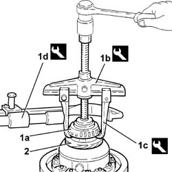
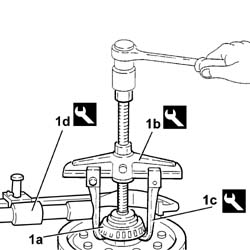
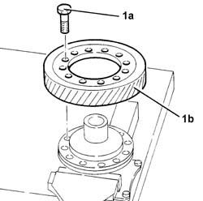
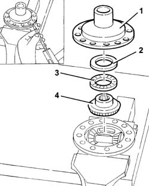
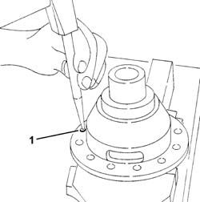
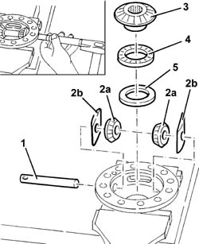
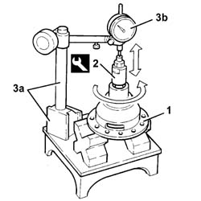
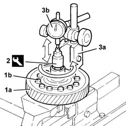
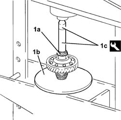
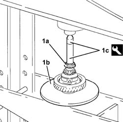

2110D20 DIFFERENTIAL INTERNAL CASING, REMOVED - DISMANTLING AND REASSEMBLY, CHECK PLANET AND SATELLITE GEARS
- Path
- Procedures > 21 GEARBOX > 2110 MANUAL GEARBOX AND DIFFERENTIAL > 2110D MANUAL GEARBOX DIFFERENTIAL > 2110D20 DIFFERENTIAL INTERNAL CASING, REMOVED - DISMANTLING AND REASSEMBLY, CHECK PLANET AND SATELLITE GEARS
- Kind
- repair procedure (removal / refitting; the operation number is the code)
- Applies to
- engines: 2.0 TB, 2.4 20V, 2.4 JTD 10V, 2.4 JTD 20V; all production periods
- Interactive page
- https://sloeber94.github.io/elrnDB-lThss/en/#/495391
Applies to: engines: 2.0 TB, 2.4 20V, 2.4 JTD 10V, 2.4 JTD 20V; all production periods
 Removing
Removing
 Refitting
Refitting- Position the differential assembly in a vice fitted with protective jaws.
1. Remove the front bearing (1a) using tools (1b), (1c) and (1d).
 | Description | Code | Function |
|---|---|---|---|
1b | Extractor | 1.840.005.001 | Removing front differential bearing |
| Description | Code | Function |
|---|---|---|---|
1c | Hoists | 1.840.005.301 | Removing front differential bearing |
| Description | Code | Function |
|---|---|---|---|
1d | Clamp for hoists | 1.840.005.400 | Removing front differential bearing |
2. Remove the speedometer drive gear.

Applies to: engines: 2.0 TB, 2.4 20V, 2.4 JTD 10V, 2.4 JTD 20V; all production periods
1. Remove the rear bearing (1a) using tools (1b), (1c) and (1d).
| Description | Code | Function |
|---|---|---|---|
1b | Extractor | 1.840.005.001 | Removing rear differential bearing |
| Description | Code | Function |
|---|---|---|---|
1c | Hoists | 1.840.005.301 | Removing rear differential bearing |
| Description | Code | Function |
|---|---|---|---|
1d | Clamp for hoists | 1.840.005.400 | Removing rear differential bearing |

Applies to: engines: 2.0 TB, 2.4 20V, 2.4 JTD 10V, 2.4 JTD 20V; all production periods
1. Undo the bolts (1a) and remove the ring gear (1b).

Applies to: engines: 2.0 TB, 2.4 20V, 2.4 JTD 10V, 2.4 JTD 20V; all production periods
1. Separate the differential internal housings using a suitable drift.
2. Remove the scraper ring.
3. Remove the bearing.
4. Remove the planet gear.

Applies to: engines: 2.0 TB, 2.4 20V, 2.4 JTD 10V, 2.4 JTD 20V; all production periods
1. Remove the satellite carrier shaft retaining pin using a suitable drift.

Applies to: engines: 2.0 TB, 2.4 20V, 2.4 JTD 10V, 2.4 JTD 20V; all production periods
1. Remove the satellite carrier shaft using a suitable drift.
2. Remove the satellite gears (2a) and the thrust washers (2b).
3. Remove the planet gear.
4. Remove the bearing.
5. Remove the scraper ring.

Applies to: engines: 2.0 TB, 2.4 20V, 2.4 JTD 10V, 2.4 JTD 20V; all production periods
Refitting
Removing- Fit the scraper ring in the front differential casing.
- Fit the bearing.
- Fit the planet gear.
- Fit the satellite gears and thrust washers and secure them with the satellite carrier shaft to be fitted using a suitable drift.
- Fit the satellite carrier shaft retaining pin using a suitable drift.
1. Position the front differential casing on a special support plane.
2. Fit the gauge on the front differential casing.
3. Position a magnetic base (3a), complete with dial gauge (3b), with the pointer in the contact with the tool with a pre-loading of 1 mm.
- Rotate the tool and move it axially, checking that the endfloat is within the recommended values.
 | Subject | Value |
|---|---|---|
. | Differential complete with manual gearbox | mm |
- | End float | 0.2 |
- If the values measured do not correspond with the recommended figures, replace the scraper ring with one of a suitable size.
- Rotate the tool through one complete revolution and check that the variation in the endfloat is within the recommended values.
| Subject | Value |
|---|---|---|
. | Differential complete with manual gearbox | mm |
- | Minimum endfloat variation | 0.1 |

Applies to: engines: 2.0 TB, 2.4 20V, 2.4 JTD 10V, 2.4 JTD 20V; all production periods
- Fit the planet gear.
- Fit the bearing.
- Fit the scraper ring.
- Fit the rear half casing.
1. Fit the ring gear (1a) and fasten it temporarily using the bolts (1b).
2. Fit the gauge on the rear differential casing.
3. Position a magnetic base (3a), complete with dial gauge (3b), with the pointer in the contact with the tool with a pre-loading of 1mm.
- Rotate the tool and move it axially, checking that the endfloat is within the recommended values.
| Subject | Value |
|---|---|---|
. | Differential complete with manual gearbox | mm |
- | End float | 0.2 |
- If the values measured do not correspond with the recommended figures, replace the scraper ring with one of a suitable size.
- Rotate the tool through one complete revolution and check that the variation in the endfloat is within the recommended values.
| Subject | Value |
|---|---|---|
. | Differential complete with manual gearbox | mm |
- | Cylinder head plane recess | 0.1 - 0.5 |
- Tighten the bolts securing the ring gear to the recommended torque.
 | Value - daNm | Fastening | Component | Ø |
|---|---|---|---|---|
. | (Self-locking) 8.2 - 11.9 | Bolt | DIFFERENTIAL ASSEMBLY | M10 |

Applies to: engines: 2.0 TB, 2.4 20V, 2.4 JTD 10V, 2.4 JTD 20V; all production periods
- Fit the speedometer drive gear.
1. Fit the front bearing (1a) using a hydraulic press, a suitable plate (1b) and the fitting tool (1c).
| Description | Code | Function |
|---|---|---|---|
1c | Extractor/Fitting tool | 1.870.658.000 | Fitting front bearing |

Applies to: engines: 2.0 TB, 2.4 20V, 2.4 JTD 10V, 2.4 JTD 20V; all production periods
1. Fit the rear bearing (1a) using a hydraulic press, a suitable plate (1b) and the fitting tool (1c).
| Description | Code | Function |
|---|---|---|---|
1c | Extractor/Fitting tool | 1.870.658.000 | Fitting front bearing |
